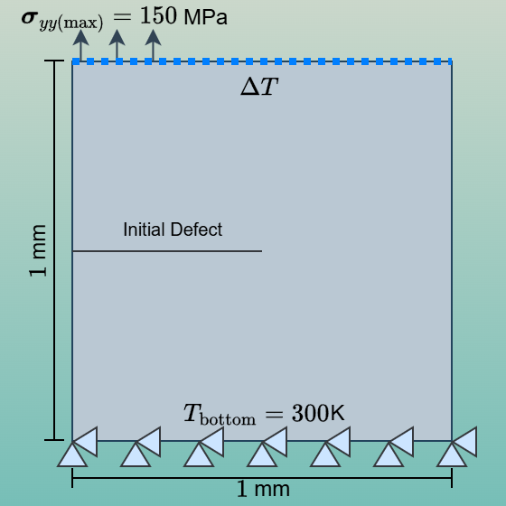
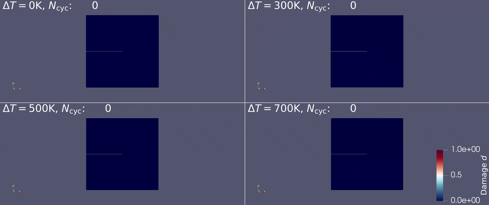

Fatigue Behavior Under Thermal Shock
A 1 mm \(\times\) 1 mm Single Edge-Notch Tension fatigue test is repeated here, this time under thermal shock. Instead of controlling displacement, a cyclic stress is applied at the top-left corner, and the top surface heats up after approximately 15 loading cycles. Objectives:
- Provide a standard setup for thermal-fatigue simulations.
- Compare results for different temperature jumps ΔT.
Material parameters and boundary conditions

| Parameter | Value |
|---|---|
| Young's Modulus \(E\) | 340,000 MPa |
| Poisson's Ratio \(\nu\) | 0.22 |
| Thermal Expansion \(\alpha_{\mathrm{thermal}}\) | 8e\(^{-6}\) m/m\(\cdot\)K |
| Reference Temperature \(T_{\mathrm{ref}}\) | 300 K |
| Max Temperature \(T_{\max}\) | 1000 K |
| Critical Energy Release Rate \(G_c\) | 2.7 MPa\(\cdot\)mm |
| Crack Band Width \(l\) | 0.01 mm |
| Degradation Function Coef. \(C_0\) | 2 |
| Parameter | Value |
|---|---|
| Loading Period | 0.2 |
| Number of Cycles | 400 |
| Critical Fatigue Threshold \(\alpha_{\mathrm{crit}}\) | 45 MPa |
| Mean-Load Mode \((R,n)\) | (0.5, 0.5) |
| Accumulation Mode | ICLA |
Animation
